3D Scanning and Animation
Contents
- Part 1. 3D scanning
- Part 2. Converting a 3D scan into a low-polygonal 3D model with R3DS Wrap
- Part 3. Polishing the model in Maya
- Part 4. Polishing the texture in Photoshop
- Part 5. Character animation with Mixamo
- Part 6. Importing a character into Unity 3D and animating it
Materials
- Example 3D scan of a human (download) - result of Part 1.
- Example 3D character model with a polished texture (download) - result of Part 3 and Part 4.
Hardware
Software
Part 1. 3D Scanning
3D scanning is the process of analyzing a real-world object or environment to collect data on its shape and color to construct a 3D model. More detail is described in Huang, Wild, Twycross (2019).
In this tutorial, we will build an animated model of a character that can be used in an Augmented Reality application. We suggest using a technology that combines depth sensing and color and requires specific hardware Structure sensor. However, a 3D model can be made by 3D scanning using other technologies, for example, with more accessible methods of photogrammetry (like with your smartphone and a free version of 3DF Zephyr).
Note: If you want to skip the 3D scanning part of the tutorial, you can download an example 3D scan of a human (download) that we made with a Structure sensor.
In this tutorial, we use the first version of the Structure hardware “Sensor” that is built for iPad. The newer version “Core” is multiplatform. The workflow for 3D scanning with structure sensor is the following:
Step 1.1: Download ItSeez3D in your iPad, Sign in/Log in to itSeez3D & Sketchfab.
Step 1.2: Open ItSeez3D and choose the type of scan you would like to perform (choose a human for this tutorial).
Step 1.3: Scan the person quickly from top to bottom.
Step 1.4: Open Sketchfab > your account > My settings > Password & API > copy API token.
Step 1.5: Open itSeez3D > click your scan > export > past API token.
Step 1.6: Now you should be able to check your scans in the Sketchfab cloud platform and download it (for example as an OBJ file).
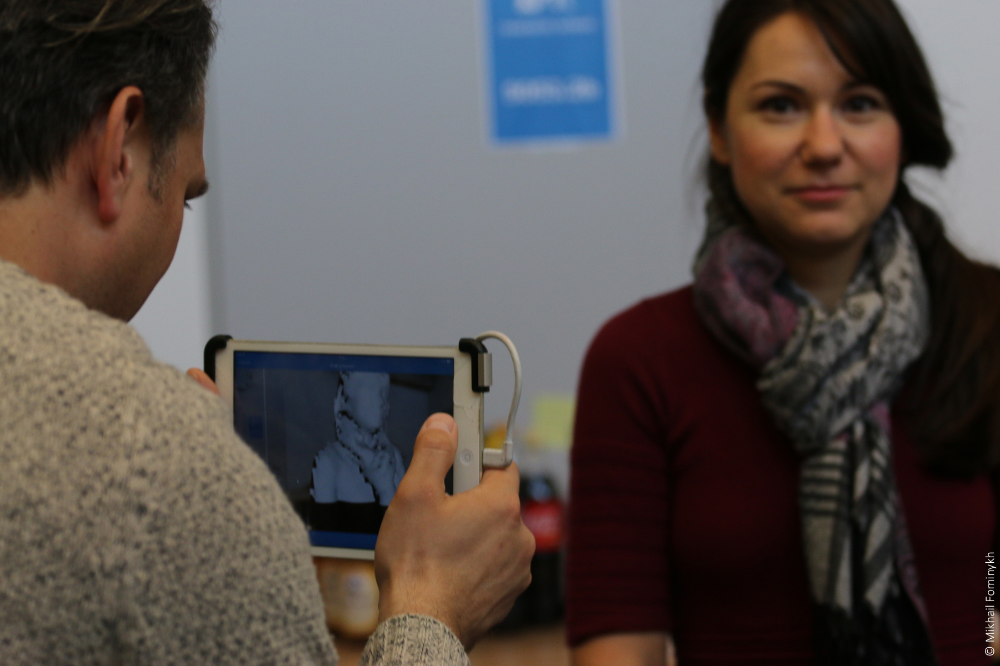
Part 2. Converting the 3D scan into a low-polygonal 3D model with R3DS Wrap
The 3D model of a human actor that we obtained by 3D scanning is complex and contains a high number of polygons. Therefore, it needs to be further processed before it can be used in real-time interactions in an Augmented Reality application.
In this phase of the tutorial, we will use a software tool R3DS Wrap to convert a 3D-scanned model of an actor to production-ready characters sharing the same topology and texture coordinates. Such conversion requires the 3D-scanned model to be first manually wrapped around a known topology. Wrap will then automatically transform from the high-polygon model to a low-polygon mesh with textures.
The main Wrap UI consists of four tabs:
- Viewport3D - shows the 3D view
- Viewpoint2D - shows the 2D texture
- Visual editor used for transformation
- Gallery contains a library of low-polygon models
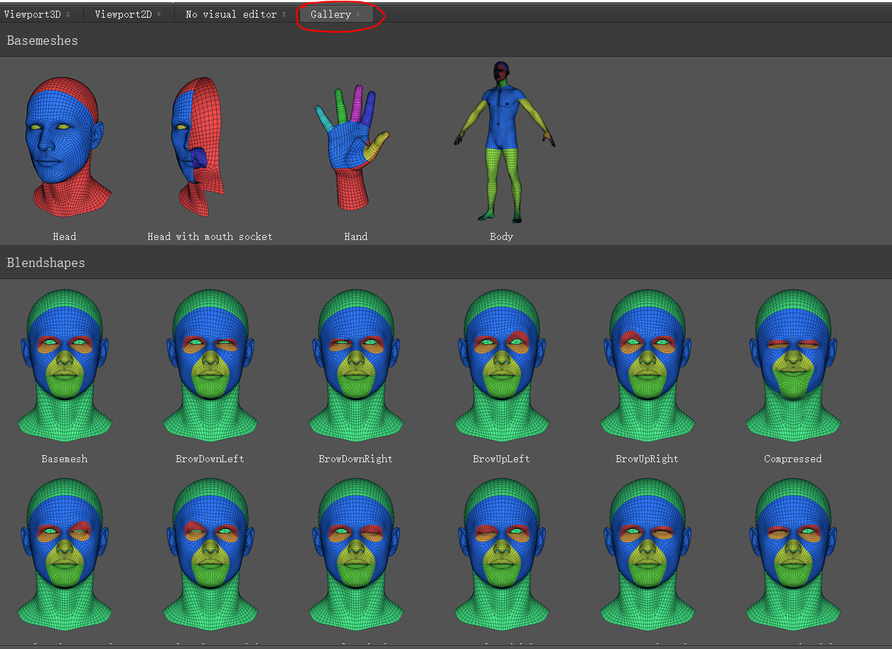
The node graph editor in the top right corner of the screen is used to create and manage scene components that are visualized as nodes in this window. The context menu of the Node graph editor can be started by pressing the Tab key.
Handy controls:
| Alt + LMB | Rotate viewpoint |
| Alt + MMB | Move viewpoint |
| Alt + RMB | Zoom in/out |
Let’s get started!
Step 2.1: Open Wrap > Gallery > select “Body” in the Basemeshes section
Step 2.2: Observe that in the Node graph editor (in the top right corner of the screen), a new node will appear. In our tutorial, we rename it Basemesh.
Step 2.3: Import 3D scan (1/2). In the Node graph editor, press Tab > Geometry > LoadGeom
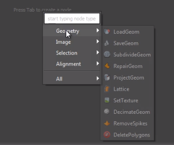
Step 2.4: Import 3D scan (2/2). In the Node graph editor, click on the new node and then in the parameters below the editor, select the 3D scanned model under “File names”. In the tutorial, we renamed the node “Fridolin”. If you skipped the 3D scanning phase, you can use this file that was obtained by scanning a person with the Structure sensor.
Step 2.5: Match the 3D scan and the Basemesh. Observe the 3D scanned model that appears in the Viewport3D next to the Basemesh model. The two models possibly have different orientations and sizes. If so, in the Node graph editor, click on the LoadGeom node and in the parameters window below the graph, try to change the Scale. Use the controls in the Viewport3D to rotate, scale and if needed move the 3D scanned model so that it matches the position and the size of the Basemesh.
Step 2.6: Importing texture (1/2). In the Node graph editor, press Tab > Image > LoadImage.
Step 2.7: Importing texture (2/2). In the Node graph editor, click on the new node and then in the parameters below the editor, select the texture of the 3D scan under “File Name”.
Step 2.8: Applying texture. In the Node graph editor, connect the output of the image node (imported texture) to the input of the geometry node (imported 3D scanned model). The 3D scanned mesh should appear textured in the Viewport3D.
Step 2.9: Adding a SelectPolygons node. In the Node graph editor, press Tab > Selection > SelectPolygons.
Step 2.10: Connect the output of the Basemesh to SelectPolygons
Step 2.11: Add a SelectPoint node. In the Node graph editor, press Tab > Selection > SelectPoints
Step 2.12: Connect the output of the Basemesh to the input of the SelectPoints node.
Step 2.13: Connect the output of the geometry node (imported 3D scanned model) to the SelectPoints node.
The Basemesh model should be on the left, and the 3D scanned model should be on the right.
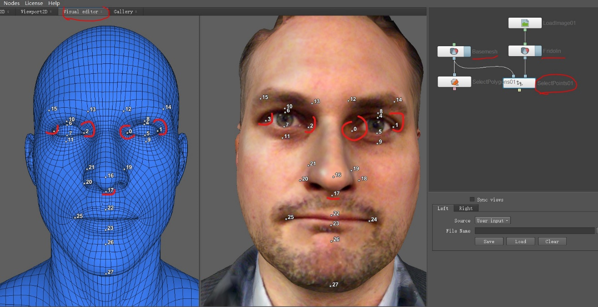
Step 2.14: Wrapping. In the Visual Editor, add corresponding points to the shape of the Basemesh model and the 3D scanned model. Use Left Mouse Click to add a point. Use Ctrl + Left Mouse Click to remove a point.
Points with the same number should be placed in approximately the same areas of the models.
Step 2.15: Model transformation (1/3). In the Node graph editor, press Tab > Alignment > Wrapping.
Step 2.16: Model transformation (2/3). In the Node graph editor, connect the outputs of the four nodes to the Wrapping node in the following way:
- Connect the output of the Basemesh node to the first input of the Wrapping node
- Connect the output of the Geometry node to the second input of the Wrapping node
- Connect the output of the SelectPoints node to the third input of the Wrapping node
- Connect the output of the SelectPolygons node to the fourth input of the Wrapping node
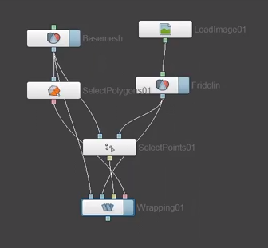
Step 2.17: Model transformation (3/3). In the properties of the Wrapping node, click Compute. The computing process will take some time.
Step 2.18: Saving the new low-polygonal model (1/3). In the Node graph editor, press Tab > Geometry > SaveGeom.
Step 2.19: Saving the new low-polygonal model (2/3). In the Node graph editor, connect the output of the Wrapping node to the input of the SaveGeom node.
Step 2.20: Saving the new low-polygonal model (3/3). In the Node graph editor, when the SaveGeom node is selected, in the Properties > File Name, choose where you want to save the new model and click “Compute current frame”.
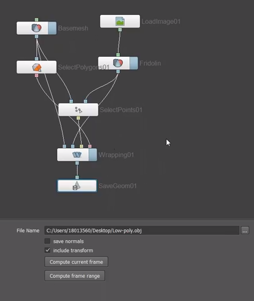
Step 2.21: Transferring texture (1/2). In the Node graph editor, press Tab > Image > TransferTexture.
Step 2.22: Transferring texture (2/2). In the Node graph editor, connect the outputs of two nodes to the TransferTexture node in the following way:
- Connect the output of the Geometry node to the first input of the TransferTexture node
- Connect the output of the Wrapping node to the second input of the TransferTexture node
Step 2.23: Saving the new texture (1/2). In the Node graph editor, press Tab > Image > SaveImage.
Step 2.24: Saving the new texture (2/3). In the Node graph editor, connect the output of the TransferTexture node to the input of the SaveImage node.
Step 2.25: Saving the new texture (2/3). In the Node graph editor, when the SaveImage node is selected, in the Properties > File Name, choose where you want to save the new texture and click “Compute current frame”.
Step 2.26: Check if the resultant 3D model is good enough to be used further in the application. If some parts of the 3D model have issues, the model can be manually corrected or the problematic part of the model can be replaced with the corresponding part of the Basemesh model. This can be done in any 3D editing software, such as Blender or Maya.
Part 3. Polishing the model in Maya
We continue working with the new 3D model in 3D editing software Autodesk Maya.
Step 3.1: Open the 3D model exported from Wrap in Maya.
Step 3.2: Combining polygons of the new 3D model. In the Outliner viewport, select all polygon elements and them select Mesh > Combine
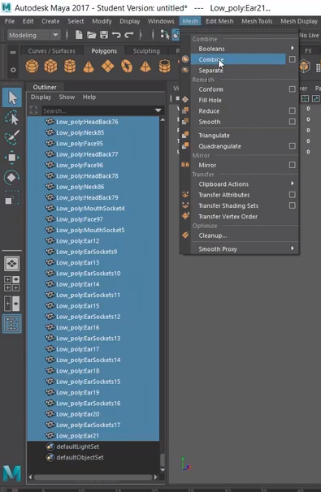
Step 3.3: Deleting history. Click on the model and select Edit > Delete all by type > History.
Step 3.4: Merging vertices of the overlapping polygons (1/2). To edit vertices, Click on the model, then while holding the Right Mouse Button > Vertices.
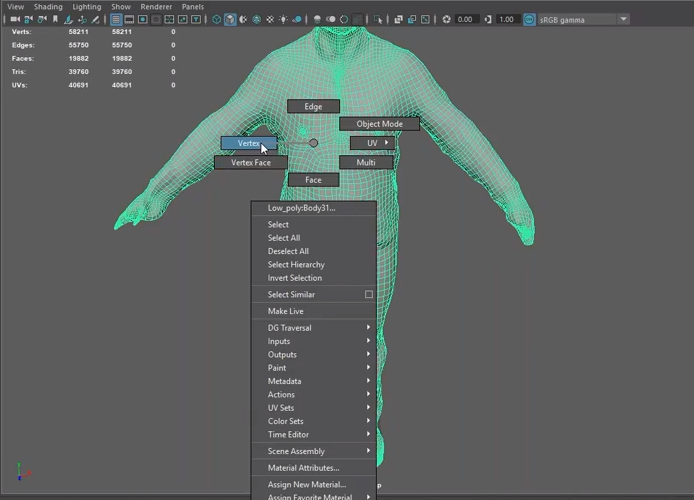
Step 3.5: Merging vertices of the overlapping polygons (2/3). To select vertices, simply zoom out so that the entire model is visible and use the left mouse button to draw a rectangle around it.
Step 3.6: Merging vertices of the overlapping polygons (3/3). To merge the vertices, select Merge from the panel above the 3D viewport. In the options window that pops up, select the Threshold value as small as possible.
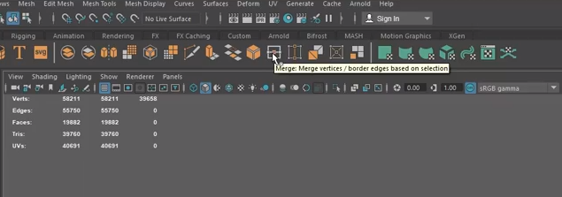
Step 3.7: Applying texture (1/4). Click on the model in the 3D viewport. Hold the Right Mouse Button and select Face. Then hold the Right Mouse Button and select Assign new material.
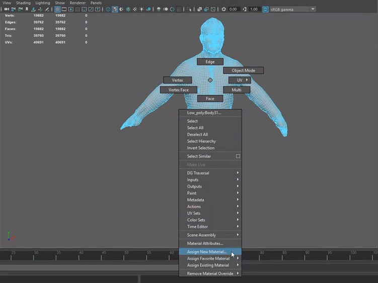
Step 3.8: Applying texture (2/4). In the Assign new material window that appears, choose Lambert (a simple flat material type).
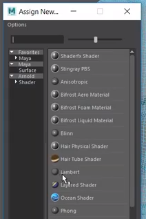
Step 3.9: Applying texture (3/4). In the Attribute editor, the new Lambert material will appear. In the Common Material Attributes, click on the “Check-pattern” button next to the Color.
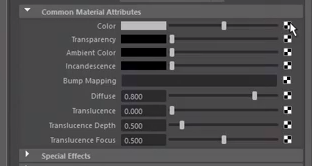
Step 3.10: Applying texture (4/4). In the Create Render Node window that appears, select File and find the texture exported from Wrap.
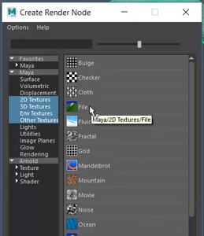
Step 3.11: Check how the textured model looks by selecting the Textured view.

Step 3.12: Polishing texture (1/3). Click the model, and while holding the Right Mouse Button, select Object Mode. And then select UV > UV Editor from the main menu.

Step 3.13: Polishing texture (2/3). When in the UV Editor, hold the Right Mouse Button and select UV.

Step 3.14: Polishing texture (3/3). When in the UV Editor, zoom in to any problematic area and then select and move the points. In the example below, the stitching edge is problematic because some of the points are located outside of the textured area - on a black background. They need to be moved inside.

Step 3.15: If the texture of the model is of acceptable quality, the model and the texture can be together exported as an OBJ or FBX file. In the main menu, select File > export.
If the texture still has issues, it might need polishing in a 2D image editor.
Part 4. Polishing the texture in Photoshop
The texture might also need some polishing, and correcting the UV map alone (as we did in Step 3.14) is not always enough.
In this tutorial, we are using Adobe Photoshop to polish the texture, but any other 2D image editing software can be used.
In Photoshop, we use the Stamp tool to clone parts of the texture to the problematic areas, such as hands and feet.
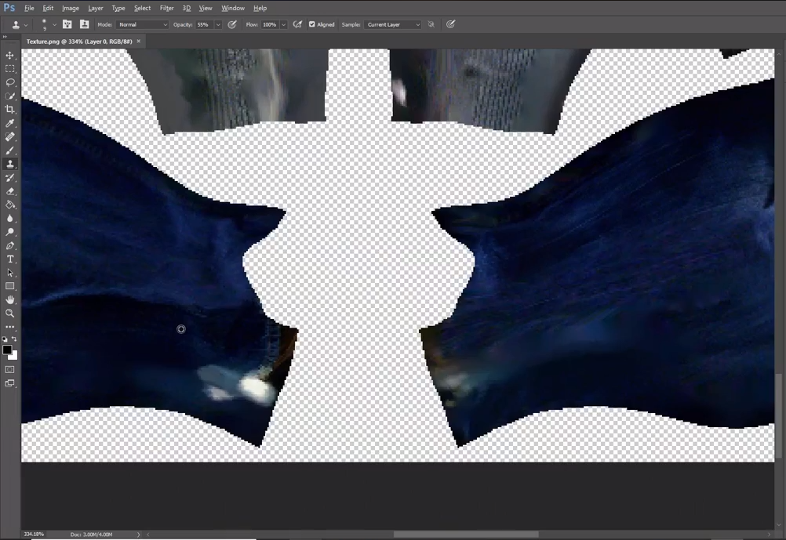
Part 5. Character animation with Mixamo
Mixamo offers multiple free animations and characters.
Step 5.1: Open Mixamo website in your browser, create an account and login.
Step 5.2: Importing textured model to Mixamo (1/2). Click the Upload Character button.
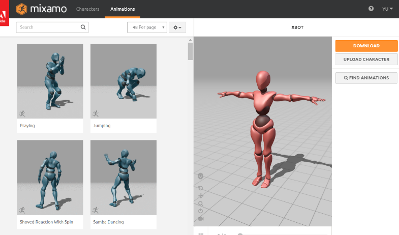
Step 5.3: Importing textured model to Mixamo (2/2) In the window that appears, select the textured 3D model filed either exported from Wrap or Maya. If you skipped parts 1-4, you can use an example 3D character model with a polished texture (download).
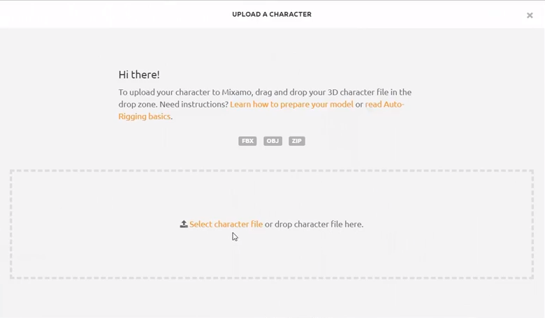
Step 5.4: Auto-rigging (1/3). Make sure that the character model is facing you. If it does not, use arrow buttons in the bottom left corner of the screen to rotate it. When finished, click Next.
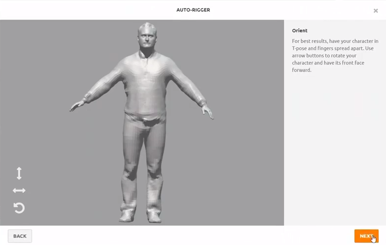
Step 5.5: Auto-rigging (2/3). Place markers on the model, following the example given on the right part of the screen. When finished click Next.
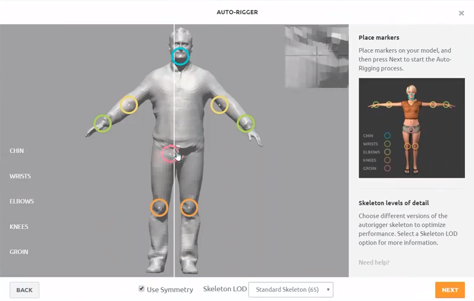
Step 5.6: Auto-rigging (3/3). Review your character while a sample animation is playing. If the rigging quality is not satisfactory, go to the previous step and try to place markers differently or uncheck “Use symmetry” or use a different skeleton.
Step 5.7: The rigged character should now appear in the main Mixamo page on the right. Choose an animation from the list on the left and click Download. In the Download settings under Format, select FBX.
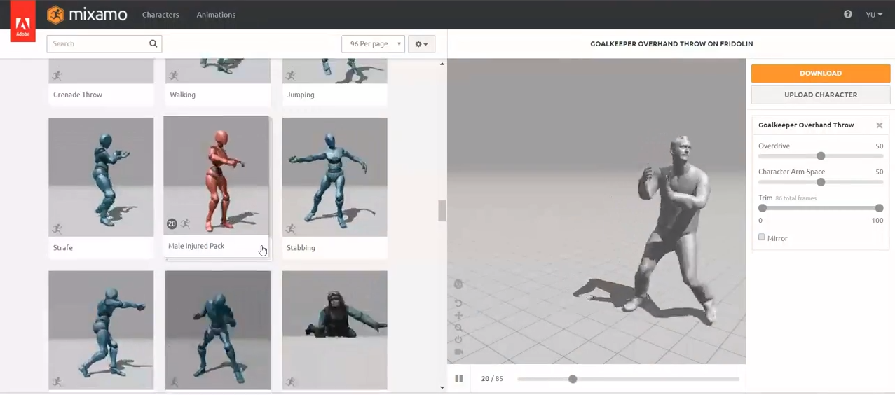
Part 6. Importing a character into Unity 3D and animating it
In this part of the tutorial, we will work in Unity 3D to import and prepare the animation to be used in an Augmented Reality application.
Step 6.1: Account and License. Open the Unity 3D website. Create an account and you can choose a free individual license either Student or Individual. Download and install Unity 3D.
Step 6.2: Importing model and animation to Unity 3D (1/3). Open Unity 3D and create a new 3D project.
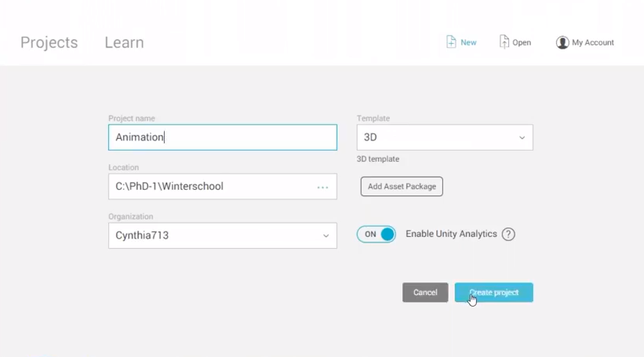
Step 6.3: Importing model and animation to Unity 3D (2/3). Before an animation can be used in Unity 3D, it should be imported into the project we have just created. In the main menu, select the Assets > Import package > Custom package or simply drag-and-drop the FBX file that you exported from either Wrap or Maya into the Assets folder in the Project viewport of Unity 3D. The animation file should appear under Assets.
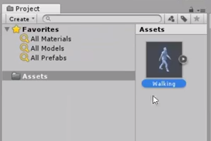
Step 6.4: Importing model and animation to Unity 3D (3/3). Even though the FBX file contains the texture, Unity 3D might not automatically apply the texture. If this happens, you can simply import the texture also by dragging the texture file to the same folder in Assets in Unity 3D.
Step 6.5: Creating a material. Click the Right Mouse Button in the same Assets folder and select Create > New material.
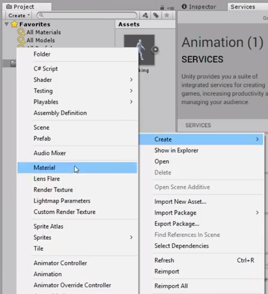
Step 6.6: Adding the texture to the material. Click on the new material in the Assets folder and then drag the texture from the assets into the Albedo property in the Inspector.
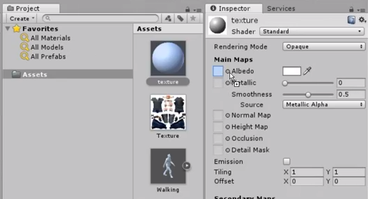
Step 6.7: Select the 3D model in the Assets. In the Inspector, select Rig. In the Animation Type dropdown menu, select Humanoid and then click Apply.
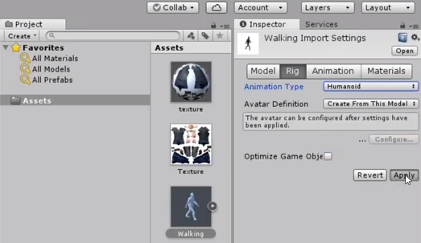
Step 6.8: Select the 3D model in the Assets. In the Inspector, select Materials. Drag the material you have created from the Assets onto the property On Demand Remap and then click Apply.
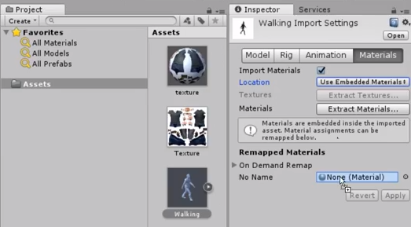
Step 6.9: Drag the 3D model from the Assets into the Scene. The character should appear in the Scene view and in the Hierarchy.
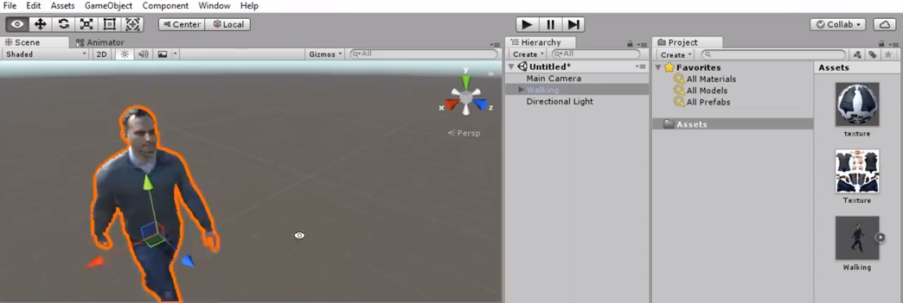
Step 6.10: Import other objects or simply create a flat surface for your character by selecting in the main menu GameObject > 3D object > Cube and modifying the parameters.
Step 6.11: Creating an Animator Controller. An animator controller allows you to arrange and maintain one or multiple animations of your character. It is necessary to play character animations in Unity 3D. Click the Right Mouse Button in the Project view and select Create > Animator Controller. A new Animator Controller should appear in the Assets.
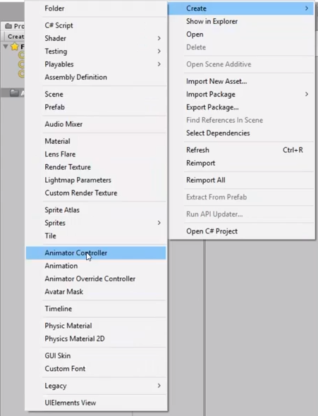
Step 6.12: Double-click the Animator Controller in the Assets to open the Animator window, which contains a visualization of the Animation State Machine that is used to arrange multiple animations of the character.
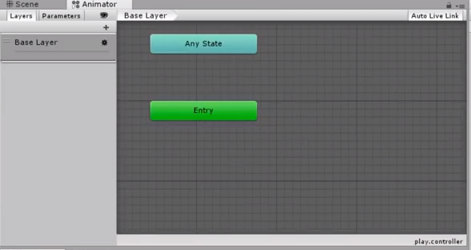
Step 6.13: Expand the FBX file in the Assets and find the animation under it. Drag the animation from the Assets into the Animator Controller.
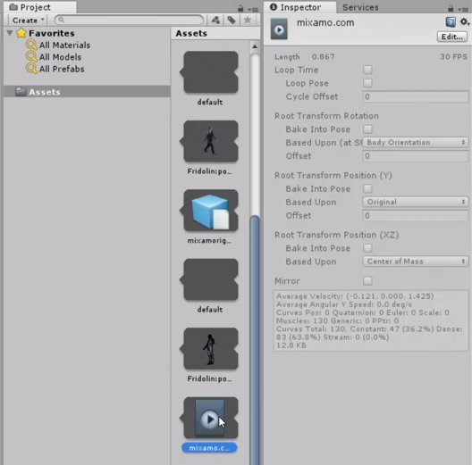
The animation should appear as an orange rectangle. This means that the animation will play as soon as the object with this animation appears.
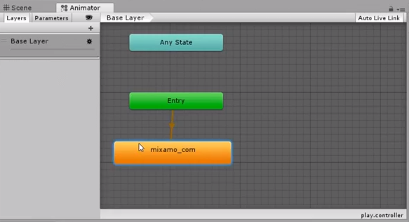
Step 6.14: Applying the animation to the character model. Select the character model in the Hierarchy and drag the Animator Controller into the Controller property in the Inspector.
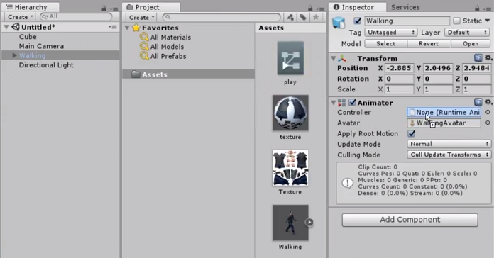
Step 6.15: Click the Play button in Unity to see the character animated in the scene.